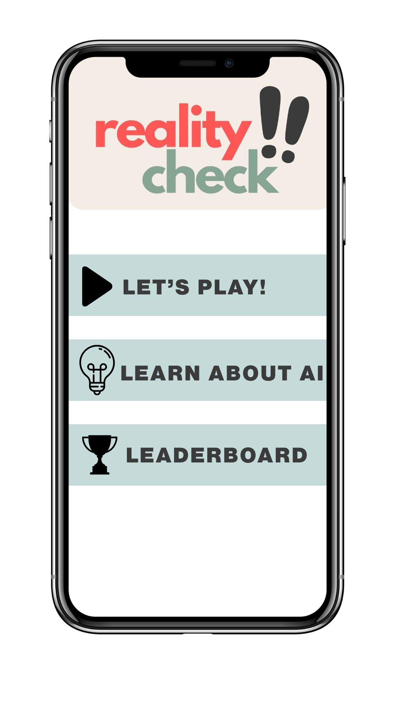
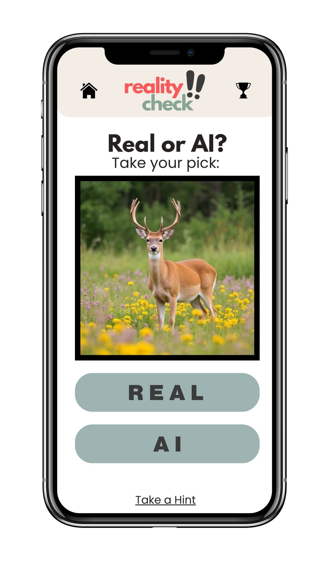
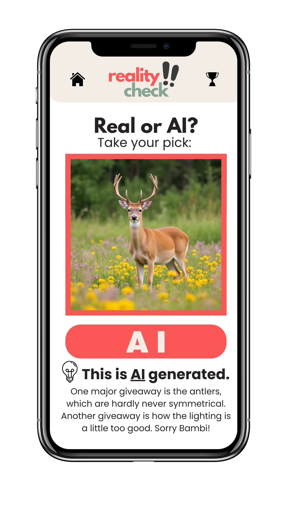
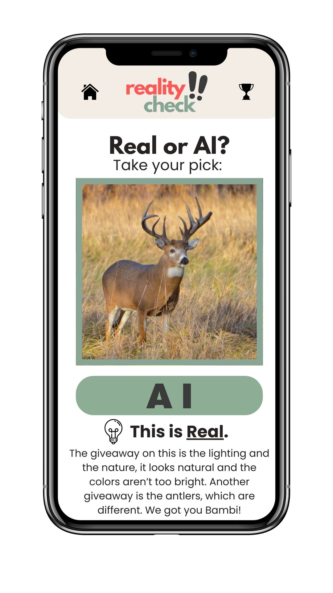

SIP Project
Reality Check!
Nichole Losh
Digital Marketing Major
Nichole Losh
Digital Marketing Major
Reality Check! is a interactive educational game designed to help players learn more about AI in a fast, engaging, and interactive environment. As Artificial Intelligence continues to expand, so should your knowledge. This project aims to build media literacy in a new way.
Players are shown a series of images, texts, or art and must decide whether the item is AI or Real.
If a player guesses incorrectly, the game provides an explanation into how to understand how the image was created.
Each round is split into 10 questions, and at the end displays a final score showing how well the user did.



